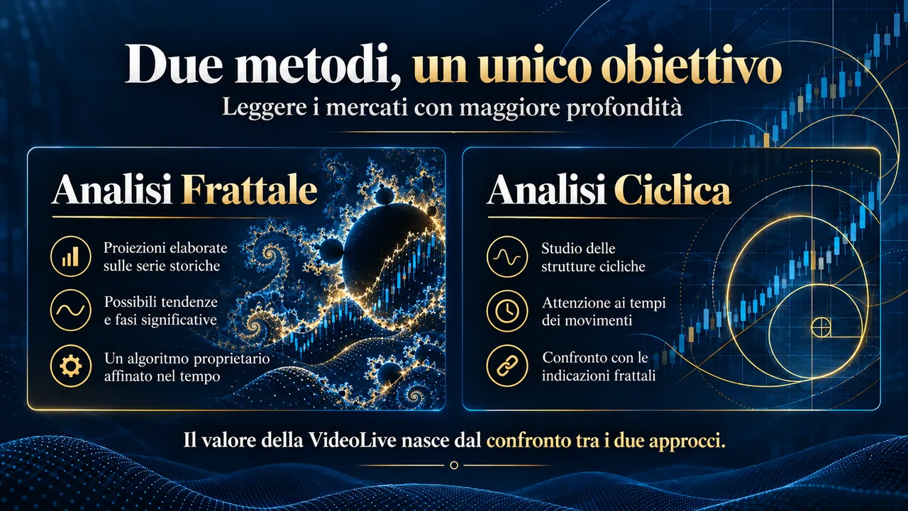

01 / Analisi frattale
Le proiezioni del mio algoritmo
Esaminerò i mercati utilizzando il mio algoritmo proprietario, che elabora dati storici per delineare possibili tendenze e momenti significativi.

Cosa ci suggeriscono oggi i mercati? Li analizzerò attraverso il mio algoritmo frattale proprietario, confrontandone le proiezioni con l'Analisi Ciclica.
Eugenio Sartorelli
Non puoi esserci in diretta? La registrazione è inclusa.
Ho deciso di organizzare una nuova VideoLive per esaminare la situazione dei principali mercati finanziari e ragionare sui loro possibili sviluppi.
Come di consueto, partirò dalle proiezioni elaborate attraverso il mio algoritmo proprietario di Analisi Frattale, che utilizzo e perfeziono da molti anni. Successivamente le confronterò con quelle dell'Analisi Ciclica, per verificare dove i due metodi concordano, dove divergono e quali scenari meritano particolare attenzione.
Nessuno ha la sfera di cristallo: parliamo di analisi probabilistiche che devono essere interpretate alla luce dell'andamento effettivo dei mercati.
Esaminerò i mercati utilizzando il mio algoritmo proprietario, che elabora dati storici per delineare possibili tendenze e momenti significativi.
Confronterò le indicazioni dell'analisi frattale con quelle delle strutture cicliche, valutando convergenze, divergenze e possibili scenari.

Generalmente ne organizzo una o due all'anno, quando ritengo che la situazione dei mercati meriti un approfondimento particolare.
Ti consiglio di essere presente, se puoi. Ma puoi acquistare tranquillamente anche se sai già che non riuscirai a collegarti il 29 ottobre.
La registrazione è inclusa nell'acquisto e sarà normalmente disponibile dal mattino successivo. Potrai guardarla in un secondo momento, quando preferisci e con calma.
La presenza in diretta è consigliata, ma assolutamente non indispensabile.
Ore 18:15–19:45 · Online
Registrazione inclusa
Stiamo completando il collegamento sicuro con Stripe per il pagamento.
Non è obbligatorio essere presenti il 29 ottobre: la registrazione è inclusa.No. La registrazione è inclusa nell'acquisto e potrai guardarla successivamente.
Normalmente dal mattino successivo alla diretta.
Le istruzioni per la diretta e la registrazione saranno inviate all'indirizzo email utilizzato per l'acquisto.
Per problemi relativi ad acquisto, accesso o visione: supporto@marketingpanorama.it. Questo indirizzo è destinato esclusivamente all'assistenza tecnica, non alle domande sulle analisi finanziarie.